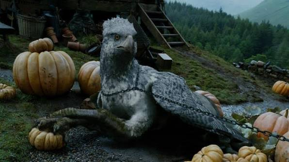
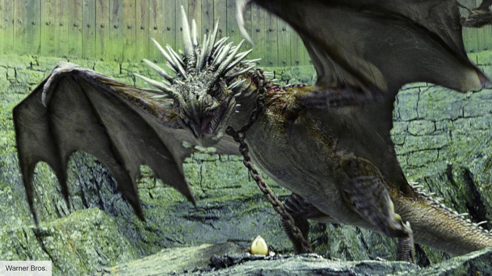

September 12, 2026

Magizoologists have reported several rare sightings of magical creatures across the United Kingdom this month. Among the most remarkable was a family of Hippogriffs seen soaring above the Scottish Highlands, displaying graceful aerial movements rarely witnessed by Muggles or wizards alike.
Meanwhile, a curious Niffler caused excitement after sneaking into a wizarding marketplace and collecting dozens of shiny Galleons before being safely returned to its keeper. Experts remind witches and wizards to secure valuable belongings whenever these mischievous creatures are near.

Dragon reserves also reported healthy breeding populations this season, thanks to ongoing conservation efforts led by the Department for the Regulation and Control of Magical Creatures. These magnificent beasts remain among the most powerful and respected magical creatures in the wizarding world.
Perhaps the rarest sighting came from a lone Phoenix observed emerging from brilliant flames before soaring into the evening sky. Witnesses described the moment as both breathtaking and deeply symbolic, reminding the magical community of hope, renewal, and resilience.
Return to Daily Prophet